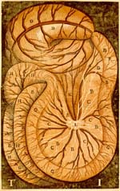

Gaspare Aselli, De lactibus sive lacteis venis quarto vasorum mesaraicorum genere novo invento dissertatio qua sententiae anatomicae multae, vel perperam receptae convelluntur, vel parum perceptae illustrantur. Mediolani, apud Ioannem Baptistam Bidellium, 1627. -- (1365 C 36)
Toen de Italiaanse arts Gaspare Aselli in 1622 in aanwezigheid van zijn vrienden Alexander Tadinus en Senator Septalius vivisectie pleegde op een hond, die zeer kort geleden wat gegeten had, ontdekte hij op het middenrif en de darmen van het dier iets wat hij eerst voor zenuwen aanzag. Bij opensnijding ervan kwam er echter een wit, melkachtig vocht uit: Aselli had herontdekt wat al bij Hippocrates als ‘chylus’ bekend stond en waarvan wij nu weten dat het vet is, opgenomen in de lymfevaten van de darmen. Op grond van het uiterlijk sprak Aselli van ‘lactes’ (‘lac’ is Latijn voor melk). Aselli kon zijn ontdekking niet zelf meer publiceren (hij overleed in 1626), maar deze taak werd door zijn twee vrienden overgenomen.
Een bijzonder onderdeel van het boek vormen de vier houtsneden in vierkleurendruk, de oudste zodanig bekende. De kleur zwart is gebruikt voor de achtergrond, de contouren, arcering en naar de tekst verwijzende letteraanduidingen; het wit (de kleur van het papier) voor de lymfevaten en de nummering van de platen; donkerrood voor de bloedvaten, arcering en het aangeven van schaduw; en lichtrood voor de oppervlaktes van de ingewanden, het middenrif en de lever.
Literatuur
- Marielene Putscher, Geschichte der medizinischen Abbildung. Von 1600 bis zur Gegenwart. München [etc ] 1973, p. 44-45.
| vorige pagina | top pagina |